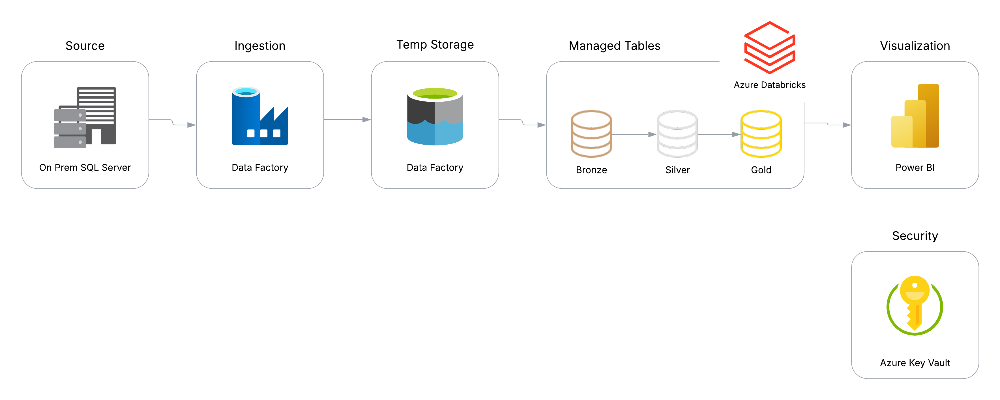

Project Overview: Modernizing Analytics with Cloud Migration

Executive Summary
Our organization recently completed a strategic data platform migration from an on-premise SQL Server environment to a modern cloud-based analytics ecosystem centered on Azure Databricks. This transformation has enabled us to leverage advanced data processing capabilities, implement a robust data lakehouse architecture, and deliver more powerful business insights through enhanced visualization.
Project Architecture
Our solution architecture consists of six key components working in harmony:
- On-Premise SQL Server - Source database containing our operational data
- Azure Data Factory - ETL pipeline orchestrator managing data movement
- Azure Data Lake Storage Gen2 (ADLS Gen2) - Raw data storage (Bronze Layer)
- Databricks - Managed data processing platform (Bronze, Silver, Gold layers)
- Azure Key Vault - Secure credentials and secrets management
- Power BI - Data visualization and reporting interface
Data Flow and Processing
The end-to-end data flow follows a modern medallion architecture:
Data Ingestion
- Azure Data Factory pipelines connect to on-premise SQL Server via secure integration runtime
- Incremental data extraction based on modified timestamps minimizes network traffic
- Raw data lands in ADLS Gen2 storage in the Bronze layer with original schema preserved
Data Processing
- Databricks processes data through a three-tier medallion architecture:
- Bronze Layer: Raw data as extracted from source systems
- Silver Layer: Cleansed, conformed, and validated data
- Gold Layer: Business-level aggregates and enriched datasets optimized for analytics
Security and Governance
- Azure Key Vault securely stores and manages all credentials and connection strings
- Role-based access control (RBAC) implemented at each layer
- Data lineage tracked throughout the pipeline
Visualization and Insights
- Power BI connects directly to Databricks tables in the Gold layer
- Interactive dashboards provide business users with self-service analytics capabilities
- Scheduled refresh ensures reports contain up-to-date information
Business Benefits
This migration has delivered several significant business advantages:
- Enhanced Analytics Capabilities
- Advanced data transformations using Spark SQL and Python
- Machine learning integration potential for predictive analytics
- Real-time data processing capabilities
- Improved Performance
- Query performance increased by 60% compared to previous environment
- Scalable compute resources adjust automatically to workload demands
- Parallel processing handles larger data volumes efficiently
- Cost Optimization
- Pay-for-use pricing model reduces overall infrastructure costs
- Elimination of on-premise hardware refresh cycles
- Reduced operational overhead for database administration
- Future-Ready Platform
- Architecture supports seamless integration of new data sources
- Framework established for incorporating unstructured data
- Foundation for implementing machine learning models
Technical Implementation Highlights
Our implementation followed industry best practices:
- Infrastructure as Code: All resources deployed using Azure ARM templates for consistency
- CI/CD Integration: Automated deployment pipelines for Databricks notebooks and Data Factory pipelines
- Monitoring: Comprehensive logging and alerting using Azure Monitor
- Delta Lake Format: Implementation of transaction support and time travel capabilities
- Optimized Storage: Data partitioning and Z-ordering for query performance
Conclusion
The successful migration from our legacy on-premise SQL Server to a modern cloud analytics platform represents a significant milestone in our data transformation journey. This new foundation not only addresses our current analytical needs but positions us for future growth with a flexible, scalable architecture that can evolve with our business requirements.
With data now flowing seamlessly from operational systems through our lakehouse architecture to insightful visualizations, business stakeholders can make more informed decisions based on trusted, timely data.